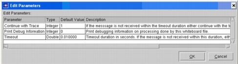
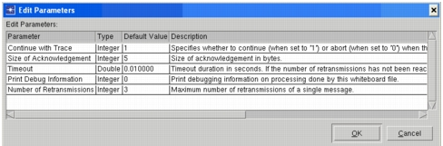
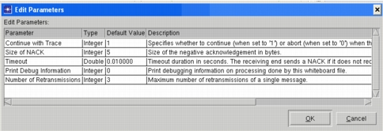

UDP Drop Response Mechanisms in Transaction Whiteboard This section describes the different UDP Drop Response mechanisms that can be modeled in Transaction Whiteboard. Every UDP connection has an associated drop response mechanism; by default, every message on that connection uses the mechanism defined for that connection. The following drop response mechanisms are supported: • Ignore Packet Drops—UDP Drop Response Option #1 • Acknowledgment (ACK) Based—UDP Drop Response Option #2 • Negative Acknowledgement ( NACK) Based—UDP Drop Response Option #3 Advanced users can also create their own customized mechanisms, as described in Creating Customized Drop Response Mechanisms (Advanced). Ignore Packet Drops—UDP Drop Response Option #1 The Ignore mechanism works as follows: 1) The sender tier sends a packet, and the simulation starts a timer. 2) If the receiver does not receive the packet within the timeout window, the simulation either continues running the application or aborts it (depending on how the “Continue with Trace” parameter is set). In this case, any action that depends on the successful transmission of a previous message is suspended until that message is received or the message timer expires. Figure 28-2 Parameters for UDP Drop Response (Ignore)  Acknowledgment (ACK) Based—UDP Drop Response Option #2 The ACK-based mechanism works like this: 1) The sender tier sends a packet, and the simulation starts a timer. If the receiver tier receives the packet, it returns an ACK. 2) If the sender does not receive the ACK within the timeout window, it retransmits the packet and the simulation resets the timer. The sender repeats this process until a) It receives an ACK for the packet, OR b) The maximum number of retransmissions is reached. 3) If the sender still has not received an ACK after the maximum number of retransmissions, the simulation continues running the application or aborts. In this case, if an action depends on the successful transmission of a message, that action is suspended until the message is received or the message timer for the last retransmitted message expires. Figure 28-3 Parameters for UDP Drop Response (ACK-Based)  Negative Acknowledgement ( NACK) Based—UDP Drop Response Option #3 The NACK-based mechanism works as follows: 1) The sender tier sends a packet, and the simulation starts a timer. 2) If the receiver tier does not receive the packet within the timeout window, it returns a NACK. 3) If the sender receives a NACK, it retransmits the packet and the simulation resets the timer. The sender repeats this process until a) it sends a packet without receiving a NACK in return, OR b) the maximum number of retransmissions is reached. 4) If the sender is still receiving NACKs after the maximum number of retransmissions, the simulation continues running the application or aborts. In this case, if an action depends on the successful reception of a previous message, that action is suspended until the message timer expires or the message is received. If a NACK is received, the packet is retransmitted. Note—This mechanism is not immune against NACK losses; if both the packet and the NACK are lost, the packet will not be retransmitted. Figure 28-4 Parameters for UDP Drop Response (NACK - Based) 